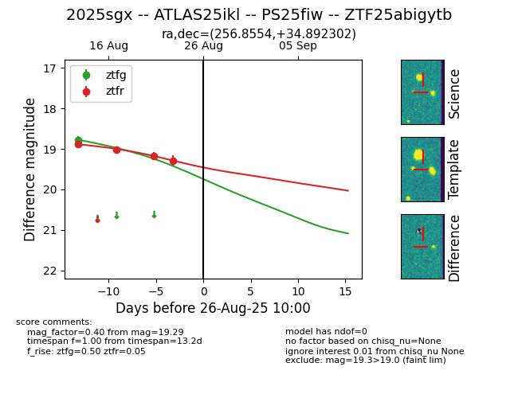

Target 2025sgx at 2025-08-26 10:00, see:
FINK: fink-portal.org/ZTF25abigytb
Lasair: lasair-ztf.lsst.ac.uk/objects/ZTF25abigytb
ALeRCE: alerce.online/object/ZTF25abigytb
TNS: wis-tns.org/object/2025sgx
YSE: ziggy.ucolick.org/yse/transient_detail/2025sgx
alt names
ZTF25abigytb (ztf,fink)
2025sgx (tns,yse)
PS25fiw (panstarrs)
ATLAS25ikl (atlas)
coordinates:
equatorial (ra, dec) = (256.8554,+34.89230)
galactic (l, b) = (58.0192,+35.51346)
photometry
last ztfg=18.78, ztfr=19.29
1 ztfg, 4 ztfr detections
